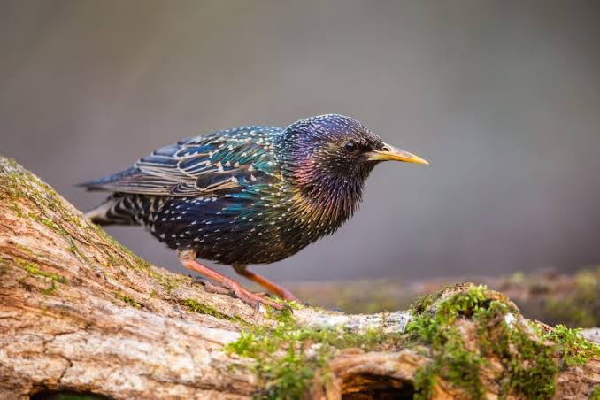

Starling
Birds
Starlings are small to medium-sized passerine birds in the family Sturnidae. The name "Sturnidae" comes from the Latin word for starling, sturnus. Many Asian species, particularly the larger ones, are called mynas, and many African species are known as glossy starlings because of their iridescent plumage.
Family: Sturnidae; Rafinesque, 1815
Scientific name: Sturnidae
Class: Aves
Clutch size: Common myna: 4 – 6
Mass: Common starling: 58 – 100 g, Common myna: 120 – 140 g,
Length: Common starling: 22 cm, Common myna: 23 cm
Starling, any of a number of birds composing most of the family Sturnidae (order Passeriformes), especially Sturnus vulgaris, a 20-cm (8-inch) chunky iridescent black bird with a long sharp bill.
It was introduced from Europe and Asia to most parts of the world (South America excepted). The millions in North America are descendants of 100 birds released in New York City in 1890–91.
They often damage fruit and grain crops—though they also consume harmful insects—and usurp native songbirds’ nest holes. S. vulgaris feeds on the ground and flies in tight flocks.
vocal year-round, it mimics other birds’ notes and utters wheezy sounds of its own. They frequently form large flocks, called murmurations, which may move in synchrony in order to avoid predators.
The bare-eyed, or pied, starling (or mynah, S. contra), from India to Java, is black, white, and reddish-brown, with yellow eye skin.
Glossy starlings, with highly iridescent plumage, include the superb starling (Lamprotornis superbus) of eastern Africa and the shining starling (Aplonis metallica) of Pacific Islands and northeastern Australia.
The 36-cm golden-breasted, or regal, starling (Lamprotornis regius) of eastern Africa, is green, blue, and yellow, with a long tail.
The wattled starling (Creatophora cinerea) is brown, gray, and white; uniquely, the breeding male becomes bald, showing bright yellow skin, and grows large black wattles on the crown and throat. For military starlings, see blackbird.
Biology of Starling
Distribution, habitat and movements
Starlings inhabit a wide range of habitats from the Arctic Circle to the Equator. In fact the only habitat they do not typically occupy is the driest sandy deserts.
The family is naturally absent from the Americas and from large parts of Australia but is present over the majority of Europe, Africa and Asia.
The genus Aplonis has also spread widely across the islands of the Pacific reaching Polynesia, Melanesia and Micronesia (in addition one species in the genus Mino has reached the Solomon Islands). It is also a species of this genus that is the only starling found in northern Australia.
Asian species are most common in evergreen forests; 39 species found in Asia are predominantly forest birds as opposed to 24 found in more open or human modified environments.
In contrast to this, African species are more likely to be found in open woodlands and savannah; 33 species are open area specialists compared to 13 true forest species.
The high diversity of species found in Asia and Africa is not matched by Europe, which has one widespread (and very common) species and two more restricted species.
Diet and feeding
The diets of the starlings are usually dominated by fruits and insects. Many species are important dispersers of seeds in continents Asia and Africa, for example white sandalwood, Indian Banyan.
In addition to trees they are also important dispersers of parasitic mistletoes. In South Africa, the red-winged starling is an important disperser of the introduced Acacia cyclops.
Starlings have been observed feeding on fermenting over-ripe fruit, which led to the speculation that they might become intoxicated by the alcohol.
Laboratory experiments on European starlings have found that they have disposal enzymes that allow them to break down alcohol very quickly.
In addition to consuming fruits, many starlings will also consume nectar. The extent to which starlings are important pollinators is unknown, but at least some are, such as the slender-billed starling of alpine East Africa, which pollinates giant lobelias.